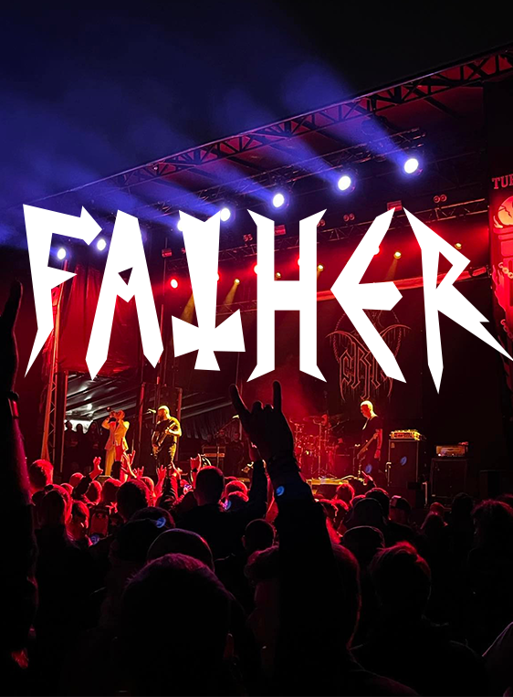
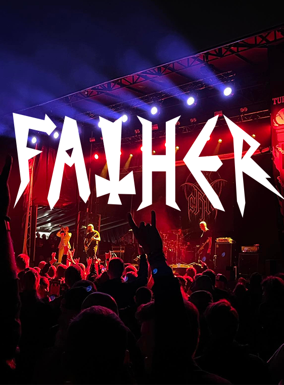
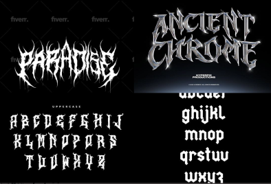

Father is a free-to-use font, inspired by my dad and the music he has always influenced me to listen to.
Heavy metal - black metal - death metal
Father is best used in headlines, for brand identity, logos, posters, websites, packaging or merch.
 


Creation process
In my process of creating Father, I started gathering inspiration and making a moodboard, to understand the feeling and vibe I wanted my font to have.
I have always been fascinated with the fonts used in the logos of black metal bands, and decided that I wanted to create my own, more readable version.
When inspiration had struck, I started to sketch out a rough version of my font, and decided on the name Father.
I put the sketch into Adobe Illustrator, and used the pen tool to create vectors. I made some finishing touches and made a few changes, and then exported it to a SVG file.